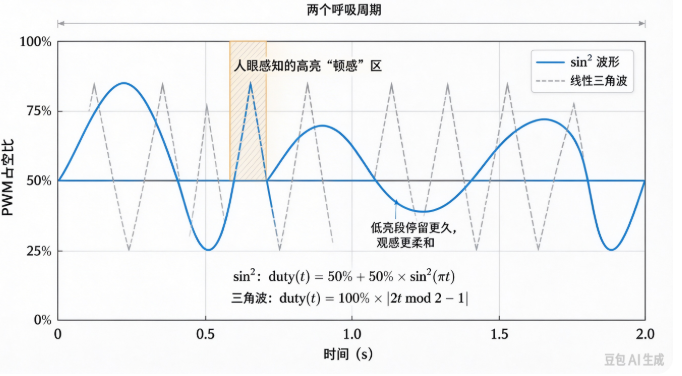

B-B.2.5 实战：GPIO 按键 + PWM 呼吸灯 + ADC 电位器采集¶
所属章节：第五部 B. 总线协议 > B-B.2 基础外设接口
难度：[I] Intermediate | 预计阅读时间：50 分钟
本节导读¶
B-B.2.1 ~ B-B.2.4 分别讲了 GPIO、PWM、ADC、DAC 四件套。本篇把它们合成一个可运行的最小产品：电位器旋钮调节 LED 呼吸灯的亮度上限，按键切换工作模式（常灭 / 呼吸 / 常亮）。
本书面向 BSP 工程师，所以本篇的主示例不是应用层程序，而是内核模块：同一个产品逻辑写成 platform 驱动，资源全部来自设备树，按键中断切模式、工作队列算波形、PWM 消费 API 写占空比——这是 BSP 的日常形态。用户态实现保留为对照（原型形态），两者的分工差异本身就是本篇要建立的判断力。
本节覆盖：功能定义与电路接线（RK3568 锚点）、"硬件 / 内核框架 / 你的驱动 / 用户态"四层分工、两种形态的设备树配置与互斥关系、可编译可加载的完整 platform 驱动（含 Makefile 与预期 dmesg）、纯用户态对照实现、联调验证清单与无硬件模拟路径。
功能定义与电路¶
功能规格¶
| 输入/输出 | 器件 | 作用 |
|---|---|---|
| 输入 1 | 电位器（旋钮） | ADC 采集，决定呼吸灯亮度上限 |
| 输入 2 | 轻触按键 | GPIO 中断，循环切换模式：常灭 → 呼吸 → 常亮 |
| 输出 | LED | PWM 驱动，亮度由模式与电位器共同决定 |
模式切换是一个三态循环状态机，电位器不切换状态、只作为每个状态下亮度计算的输入参数：
stateDiagram-v2
[*] --> 常灭
常灭 --> 呼吸 : 按键中断
呼吸 --> 常亮 : 按键中断
常亮 --> 常灭 : 按键中断
常灭 : 常灭\nPWM 占空比 = 0
呼吸 : 呼吸\nPWM = sin²(相位) × 旋钮值
常亮 : 常亮\nPWM = 旋钮值接线（RK3568）¶
要点：电位器两端接 3.3 V/GND、抽头接 SARADC 通道 3，0~3.3 V 线性对应旋钮角度；按键一端 GPIO1_A0、一端 GND，内部上拉（低电平有效，见 B-B.2.1）；LED 阳极经 330 Ω 限流电阻接 PWM0，电流约 4 mA，在 8 mA 限额内。
💡 引脚分配以实际板卡原理图为准：电位器接哪个 ADC 通道、PWM 用哪个通道、按键在哪个 GPIO bank，都查本板 dts 与原理图。
本节示例用 SARADC 通道 3、pwm0、GPIO1_A0，自行替换。
四层分工：硬件、内核框架、你的驱动、用户态¶
前三节的责任线是"硬件 vs 软件"，本篇按 BSP 视角把软件再拆细：
| 层 | 负责什么 | 本章对应物 |
|---|---|---|
| 硬件（自动） | ADC 采样量化、PWM 波形生成、按键边沿检测 | 接线图里的三个器件 |
| 内核框架（现成代码） | IIO 消费 API、PWM 消费 API、gpiolib 与中断派发 | iio_read_channel_raw / pwm_apply_might_sleep / gpiod_to_irq |
| 你的驱动（BSP 主战场） | probe 从设备树拿资源、中断里切模式、节拍里算波形写占空比 | breath_ctrl_drv.c |
| 用户态 | 产品形态下为空；原型形态下全包（见对照节） | breath_ctrl.c |
💡 四层各归各的好处：驱动里没有一个寄存器地址、没有一句外设初始化——前三节讲的硬件细节全部沉淀成了设备树属性和框架 API。
换一个采集源或输出器件，改动收敛在设备树和 probe 的资源获取，模式机与波形算法不动。
设备树配置：两种形态两种写法¶
内核驱动形态（本篇主示例）：三份资源聚合到一个自定义节点，驱动 probe 时一次取走：
/* ADC、PWM 控制器使能（dtsi 默认 disabled） */
&saradc {
vref-supply = <&vcc_3v3>; /* 参考电压接 3.3V */
status = "okay";
};
&pwm0 {
pinctrl-0 = <&pwm0m0_pins>; /* 引脚复用到 PWM 功能 */
status = "okay";
};
/* 产品逻辑节点：三份资源聚合，匹配本篇的 platform 驱动 */
/ {
breath_ctrl: breath-ctrl {
compatible = "demo,breath-ctrl"; /* 匹配驱动的 of_match_table */
pwms = <&pwm0 100000 0>; /* PWM 通道 + 周期 100000ns(10kHz) + 正常极性 */
io-channels = <&saradc 3>; /* 电位器：SARADC 通道 3 */
btn-gpios = <&gpio1 0 GPIO_ACTIVE_LOW>; /* 按键：GPIO1_A0，按下为低 */
};
};
用户态形态（对照节用）：按键改由 gpio-keys 现成驱动注册成 input 事件，PWM/ADC 暴露 sysfs 给用户态读写：
/ {
gpio_keys: gpio-keys {
compatible = "gpio-keys"; /* 内核现成按键驱动 */
button_mode: button-mode {
label = "mode-btn";
gpios = <&gpio1 0 GPIO_ACTIVE_LOW>;
linux,code = <KEY_F1>; /* 上报的事件码，用户态按它过滤 */
debounce-interval = <20>; /* 内核防抖，单位 ms */
};
};
};
⚠️ 两种形态在同一个引脚上互斥：
breath-ctrl与gpio-keys都请求 GPIO1_A0，后 probe 的一方会拿到-EBUSY。
同一个产品，功能住内核还是住用户态，设备树长相不同——选哪边，另一边就要从设备树里删掉。
电路上的每根线，在设备树里都有对应落点：
| 电路上的这根线 | 内核驱动形态 | 用户态形态 |
|---|---|---|
| 电位器抽头 → SARADC_VIN3 | io-channels = <&saradc 3> |
&saradc 使能，通道号写进程序 |
| 按键 → GPIO1_A0 | btn-gpios（驱动自己收中断） |
gpio-keys 三属性（内核代管） |
| LED → PWM0 | pwms = <&pwm0 100000 0> |
&pwm0 使能，sysfs 导出 |
上驱动之前先做注册三查，缺哪个回设备树补哪个：
ls /sys/bus/iio/devices/ # 出现 iio:deviceX（saradc）
ls /sys/class/pwm/ # 出现 pwmchipN
gpioinfo gpiochip1 | grep "GPIO1_A0\|line 0" # 确认按键引脚空闲、未被占用
内核驱动完整实现（产品形态）¶
单文件 platform 驱动 breath_ctrl_drv.c + 一个 Makefile，外部模块方式编译，直接可加载验证。
/* breath_ctrl_drv.c —— 呼吸灯产品逻辑的内核态实现（platform 驱动）
* 资源全部来自设备树 breath-ctrl 节点：pwms / io-channels / btn-gpios
* 按键中断里切模式；延迟工作队列里读旋钮、算波形、写占空比
*
* 编译（外部模块；KDIR 指向目标板的内核构建目录）：
* make -C $KDIR M=$PWD ARCH=arm64 CROSS_COMPILE=aarch64-linux-gnu- modules
* 加载与验证（开发板上）：
* insmod breath_ctrl_drv.ko
* dmesg | tail
* 预期 dmesg（probe 后按两下按键）：
* breath-ctrl: probed (pwm0 + saradc ch3 + btn irq)
* breath-ctrl: mode -> breath
* breath-ctrl: mode -> on
*/
#include <linux/module.h>
#include <linux/platform_device.h>
#include <linux/pwm.h>
#include <linux/iio/consumer.h>
#include <linux/gpio/consumer.h>
#include <linux/interrupt.h>
#include <linux/workqueue.h>
#define BREATH_TICK_MS 20 /* 呼吸节拍：每 20ms 推一步 */
#define ADC_MAX 1023 /* RK3568 SARADC 为 10-bit */
enum breath_mode { MODE_OFF = 0, MODE_BREATH, MODE_ON, MODE_MAX };
struct breath_ctrl {
struct pwm_device *pwm; /* 设备树 pwms 属性给的 PWM 通道 */
struct iio_channel *adc; /* io-channels 属性给的 ADC 通道 */
struct gpio_desc *btn; /* btn-gpios 属性给的按键 */
int irq; /* 由按键 GPIO 换算出的中断号 */
struct delayed_work tick; /* 呼吸节拍：延迟工作队列 */
enum breath_mode mode; /* 当前模式：中断里改、节拍里读 */
unsigned int breath_idx; /* 呼吸步号 0~31（32 步一周期） */
};
/* ---- 读电位器：返回原始值 0~1023 ---- */
static int breath_read_knob(struct breath_ctrl *bc)
{
int raw;
if (iio_read_channel_raw(bc->adc, &raw) < 0) /* IIO 消费侧 API：一行读 raw */
return 0; /* 读失败按 0 处理，灯不乱闪 */
if (raw > ADC_MAX) raw = ADC_MAX; /* 钳位：防异常值穿透到占空比 */
return raw;
}
/* ---- 写占空比：ratio 为定点比例 0~1024 ---- */
static void breath_set_pwm(struct breath_ctrl *bc, unsigned int ratio)
{
struct pwm_state state;
pwm_init_state(bc->pwm, &state); /* 从设备树读周期/极性默认值 */
if (ratio > 1024) ratio = 1024; /* duty ≤ period 是硬约束 */
state.duty_cycle = (u64)state.period * ratio / 1024;
state.enabled = ratio ? true : false; /* 占空比为 0 时顺手关输出 */
pwm_apply_might_sleep(bc->pwm, &state); /* 6.8 之前的内核叫 pwm_apply_state */
}
/* ---- 呼吸节拍：读旋钮 → 按模式算占空比 → 写 PWM → 排下一次节拍 ---- */
static void breath_tick(struct work_struct *work)
{
struct breath_ctrl *bc = container_of(to_delayed_work(work),
struct breath_ctrl, tick);
unsigned int knob = breath_read_knob(bc); /* 旋钮：亮度上限 0~1023 */
unsigned int ratio = 0; /* 占空比比例，定点 0~1024 */
switch (bc->mode) {
case MODE_ON:
ratio = knob; /* 常亮：亮度 = 旋钮位置 */
break;
case MODE_BREATH: {
/* 内核态无浮点：sin² 用查表——存四分之一周期 9 项，其余靠对称展开 */
static const unsigned short sin2_q[9] = {
0, 39, 150, 316, 512, 708, 874, 985, 1024 /* sin²(0..90°)×1024 */
};
unsigned int i = bc->breath_idx; /* 0~31 */
unsigned int q = i < 8 ? i : /* 折叠到第一象限 0~8 */
i < 16 ? 16 - i :
i < 24 ? i - 16 : 32 - i;
ratio = sin2_q[q] * knob / ADC_MAX; /* sin²(相位) × 旋钮上限 */
bc->breath_idx = (bc->breath_idx + 1) & 31; /* 32 步 × 20ms ≈ 0.64s 一周期 */
break;
}
case MODE_OFF:
default:
ratio = 0; /* 常灭 */
break;
}
breath_set_pwm(bc, ratio);
schedule_delayed_work(&bc->tick, msecs_to_jiffies(BREATH_TICK_MS));
}
/* ---- 按键中断（线程化）：只切模式，不碰 PWM/IIO ---- */
static irqreturn_t breath_btn_irq(int irq, void *data)
{
struct breath_ctrl *bc = data;
static const char * const names[] = { "off", "breath", "on" };
bc->mode = (bc->mode + 1) % MODE_MAX; /* 三态循环 */
pr_info("breath-ctrl: mode -> %s\n", names[bc->mode]);
return IRQ_HANDLED;
}
static int breath_probe(struct platform_device *pdev)
{
struct breath_ctrl *bc;
int ret;
/* devm_kzalloc：驱动卸载时内存自动释放，不用手写 kfree */
bc = devm_kzalloc(&pdev->dev, sizeof(*bc), GFP_KERNEL);
if (!bc)
return -ENOMEM;
/* 从设备树拿三份资源；dev_err_probe 在依赖未就绪时返回 -EPROBE_DEFER，
* 内核会稍后自动重试 probe——PWM/IIO 控制器比本驱动晚注册时靠它兜底 */
bc->pwm = devm_pwm_get(&pdev->dev, NULL); /* 读 pwms 属性 */
if (IS_ERR(bc->pwm))
return dev_err_probe(&pdev->dev, PTR_ERR(bc->pwm), "get pwm\n");
bc->adc = devm_iio_channel_get(&pdev->dev, NULL); /* 读 io-channels 属性 */
if (IS_ERR(bc->adc))
return dev_err_probe(&pdev->dev, PTR_ERR(bc->adc), "get adc\n");
bc->btn = devm_gpiod_get(&pdev->dev, "btn", GPIOD_IN); /* btn-gpios，配成输入 */
if (IS_ERR(bc->btn))
return dev_err_probe(&pdev->dev, PTR_ERR(bc->btn), "get btn gpio\n");
gpiod_set_debounce(bc->btn, 20000); /* 消抖 20ms，单位 μs；
* gpiochip 不支持时返回 -ENOTSUPP，教学场景从略 */
bc->irq = gpiod_to_irq(bc->btn); /* GPIO 号换算成中断号 */
if (bc->irq < 0)
return dev_err_probe(&pdev->dev, bc->irq, "gpiod_to_irq\n");
bc->mode = MODE_OFF; /* 上电常灭 */
bc->breath_idx = 0;
INIT_DELAYED_WORK(&bc->tick, breath_tick); /* 呼吸节拍挂工作队列 */
schedule_delayed_work(&bc->tick, msecs_to_jiffies(BREATH_TICK_MS));
platform_set_drvdata(pdev, bc);
/* 顶半部传 NULL：处理全部线程化（IRQF_ONESHOT 配套），
* 线程上下文里可以放心打印、改模式——详见第 10 章 threaded IRQ */
ret = devm_request_threaded_irq(&pdev->dev, bc->irq,
NULL, breath_btn_irq,
IRQF_TRIGGER_FALLING | IRQF_ONESHOT,
"breath-btn", bc);
if (ret)
return dev_err_probe(&pdev->dev, ret, "request irq\n");
pr_info("breath-ctrl: probed (pwm0 + saradc ch3 + btn irq %d)\n", bc->irq);
return 0;
}
/* 6.11 起 .remove 返回 void；6.1/6.6 LTS 需改回 int 并 return 0 */
static void breath_remove(struct platform_device *pdev)
{
struct breath_ctrl *bc = platform_get_drvdata(pdev);
struct pwm_state state;
cancel_delayed_work_sync(&bc->tick); /* 先停节拍，防卸载后还在写 PWM */
pwm_init_state(bc->pwm, &state);
state.enabled = false;
pwm_apply_might_sleep(bc->pwm, &state); /* 关灯退出 */
/* 其余资源全是 devm_* 申请，卸载时自动释放，不用手写 */
}
static const struct of_device_id breath_of_match[] = {
{ .compatible = "demo,breath-ctrl" }, /* 与设备树节点 compatible 对应 */
{ }
};
MODULE_DEVICE_TABLE(of, breath_of_match);
static struct platform_driver breath_driver = {
.probe = breath_probe,
.remove = breath_remove,
.driver = {
.name = "breath-ctrl",
.of_match_table = breath_of_match, /* 设备树匹配表：驱动靠它找到节点 */
},
};
module_platform_driver(breath_driver); /* 展开为 module_init/exit + 注册注销 */
MODULE_LICENSE("GPL");
MODULE_DESCRIPTION("breath-ctrl demo: button mode + knob brightness + PWM breath");
配套 Makefile：
obj-m += breath_ctrl_drv.o # 编译为可加载模块
# 使用：make -C <内核构建目录> M=$PWD ARCH=arm64 CROSS_COMPILE=aarch64-linux-gnu- modules
驱动要点解读¶
- 资源全部来自设备树：
pwms/io-channels/btn-gpios三个属性在 probe 里一次取走——对比用户态版"打开三个文件路径"，内核版连路径都没有，只有属性名 - devm_* 系列：内存、PWM、IIO 通道、GPIO、IRQ 全部托管，remove 里只剩"停节拍、关灯"两件事——资源泄漏类 bug 从结构上消失
- 中断全线程化：顶半部传 NULL +
IRQF_ONESHOT，处理函数运行在线程上下文（第 10 章 threaded IRQ 的落地），打印、睡眠都安全 - 节拍用工作队列而不用 hrtimer：
pwm_apply_might_sleep()名字里就写着"可能睡眠"，必须在进程上下文——这是 10.3 底半部选型的直接应用 - 内核态无浮点：用户态版的
sinf()在内核里不能用，sin² 改查表（四分之一周期 9 项 + 对称折叠）——用户态代码搬进内核的第一道坎几乎都是它 - dev_err_probe 与 -EPROBE_DEFER：PWM/IIO 控制器比本驱动晚完成注册时，probe 返回延迟重试而不是直接失败——dmesg 里看到这个码不是错误，是"稍后重试"
对照：纯用户态实现（原型形态）¶
同一个产品逻辑不住内核、全住用户态，长这样：按键走 gpio-keys + input 事件（路径 A，见 B-B.2.1），ADC/PWM 走 sysfs。适合原型验证、快速迭代、不想动内核的场景；量产产品里凡是"开机即工作、不依赖根文件系统、要实时性"的功能，都应收进内核侧。
/* breath_ctrl.c —— 电位器调亮度上限，按键切模式：常灭→呼吸→常亮
* 目标平台：RK3568（saradc + pwm0 + gpio-keys），用户态形态
* 依赖：无第三方库，仅 libm（sinf 在其中）
* 编译（开发板上直接编译）：
* gcc -Wall -o breath_ctrl breath_ctrl.c -lm
* 运行：
* ./breath_ctrl
* 预期输出（启动后按两下按键）：
* 启动：按键切模式（常灭→呼吸→常亮），旋钮调亮度上限
* 模式 → 呼吸
* 模式 → 常亮
*/
#include <stdio.h>
#include <stdlib.h>
#include <string.h>
#include <unistd.h>
#include <fcntl.h>
#include <poll.h>
#include <math.h>
#include <linux/input.h> /* input_event 结构、EV_KEY 等定义 */
/* ---- 平台参数（按实际板卡修改） ---- */
#define INPUT_DEV "/dev/input/event0" /* gpio-keys 注册出的按键事件节点 */
#define BTN_CODE KEY_F1 /* 必须与设备树 linux,code 一致 */
#define IIO_DEV "/sys/bus/iio/devices/iio:device0"
#define ADC_CHANNEL 3 /* 电位器所在 SARADC 通道 */
#define ADC_MAX 1023 /* RK3568 SARADC 为 10-bit，满量程 1023 */
#define PWM_CHIP "/sys/class/pwm/pwmchip0"
#define PWM_PATH "/sys/class/pwm/pwmchip0/pwm0"
#define PWM_PERIOD_NS 100000 /* 10 kHz：高于人眼可察频闪 */
enum mode { MODE_OFF = 0, MODE_BREATH, MODE_ON, MODE_MAX }; /* 三态模式机 */
/* ---- sysfs 小工具：属性当普通文件读写 ---- */
static int sysfs_write(const char *path, const char *val)
{
int fd = open(path, O_WRONLY);
if (fd < 0) return -1;
int ret = write(fd, val, strlen(val)); /* sysfs 写入就是写字符串 */
close(fd);
return ret < 0 ? -1 : 0;
}
static int sysfs_read_int(const char *path)
{
char buf[32] = {0};
int fd = open(path, O_RDONLY);
if (fd < 0) return -1;
if (read(fd, buf, sizeof(buf) - 1) <= 0) { close(fd); return -1; }
close(fd);
return atoi(buf); /* sysfs 内容是一行十进制数字 */
}
/* ---- ADC：读电位器，返回 0.0~1.0 的比例 ---- */
static float adc_read_ratio(void)
{
char path[128];
snprintf(path, sizeof(path), "%s/in_voltage%d_raw", IIO_DEV, ADC_CHANNEL);
int raw = sysfs_read_int(path);
if (raw < 0) return 0.0f; /* 读失败按 0 处理，不让灯乱闪 */
if (raw > ADC_MAX) raw = ADC_MAX; /* 钳位：防异常值穿透到占空比 */
return (float)raw / ADC_MAX; /* 归一化成比例，与位数解耦 */
}
/* ---- PWM：导出 → 配周期 → 占空比清零 → 使能 ---- */
static int pwm_init(void)
{
char buf[32];
sysfs_write(PWM_CHIP "/export", "0"); /* 已导出时会失败，忽略其返回值 */
usleep(100000); /* 等 udev 建好 pwm0 目录 */
snprintf(buf, sizeof(buf), "%d", PWM_PERIOD_NS);
sysfs_write(PWM_PATH "/period", buf); /* 先配周期（单位纳秒） */
sysfs_write(PWM_PATH "/duty_cycle", "0"); /* 占空比清零，避免上电即亮 */
return sysfs_write(PWM_PATH "/enable", "1");
}
static void pwm_set_ratio(float ratio) /* ratio: 0.0~1.0 */
{
char buf[32];
if (ratio < 0.0f) ratio = 0.0f;
if (ratio > 1.0f) ratio = 1.0f; /* 钳位是 sysfs 约束：duty ≤ period */
snprintf(buf, sizeof(buf), "%d", (int)(PWM_PERIOD_NS * ratio));
sysfs_write(PWM_PATH "/duty_cycle", buf);
}
int main(void)
{
/* ---- 按键：gpio-keys 已注册成 input 设备，直接读事件 ---- */
int btn_fd = open(INPUT_DEV, O_RDONLY | O_NONBLOCK);
if (btn_fd < 0) { perror(INPUT_DEV); return 1; } /* 打不开先回设备树三查 */
if (pwm_init() < 0) { perror("pwm_init"); return 1; }
enum mode mode = MODE_OFF;
float phase = 0.0f; /* 呼吸相位，0~2π */
const float step = 0.15f; /* 每个 20ms 节拍推进的相位 */
struct pollfd pfd = { .fd = btn_fd, .events = POLLIN };
printf("启动：按键切模式（常灭→呼吸→常亮），旋钮调亮度上限\n");
for (;;) {
/* poll 超时 20ms：既等按键事件，又当呼吸节拍源，省掉独立定时器线程 */
if (poll(&pfd, 1, 20) > 0 && (pfd.revents & POLLIN)) {
struct input_event ev;
/* 非阻塞读掏空事件队列；队列空了 read 返回 -1，循环自然退出 */
while (read(btn_fd, &ev, sizeof(ev)) == sizeof(ev)) {
/* value: 0=松开 1=按下 2=长按重复——只在"按下"切模式，
* 不过滤的话一次按键会切两次（按下+松开各一次） */
if (ev.type == EV_KEY && ev.code == BTN_CODE && ev.value == 1) {
mode = (mode + 1) % MODE_MAX;
printf("模式 → %s\n",
mode == MODE_OFF ? "常灭" :
mode == MODE_BREATH ? "呼吸" : "常亮");
}
}
}
float knob = adc_read_ratio(); /* 电位器：亮度上限 0.0~1.0 */
switch (mode) {
case MODE_OFF:
pwm_set_ratio(0.0f); /* 常灭：占空比 0 */
break;
case MODE_ON:
pwm_set_ratio(knob); /* 常亮：亮度=旋钮位置 */
break;
case MODE_BREATH:
phase += step;
if (phase > 6.2832f) phase -= 6.2832f; /* 相位绕回 0~2π */
float s = sinf(phase);
pwm_set_ratio(s * s * knob); /* sin² 波形 × 旋钮上限 */
break;
default:
break;
}
}
/* 到达不了；正常退出应 close(btn_fd) 并写 enable=0 关 PWM */
return 0;
}
用户态版要点（与内核版逐项对照）¶
- 事件模型：poll 超时兼作节拍源（省线程）——内核版对应 delayed_work；两种形态各有一个"节拍源"，选型理由相同
- 防抖位置：用户态版靠设备树 gpio-keys 的
debounce-interval（单位 ms）；内核版用gpiod_set_debounce()（单位 μs）——同一件事，两处单位不同，写错差 1000 倍 - 事件过滤
value == 1：input 事件区分按下/松开/重复，不过滤一次按键切两次模式 - 浮点可用：用户态有
sinf()，内核版被迫查表——两版波形代码的差异全因这一条

联调验证清单¶
以内核驱动形态为准（用户态形态把"insmod/dmesg"换成"运行程序/看终端"即可）：
| 步骤 | 操作 | 预期 |
|---|---|---|
| 1 | 注册三查（iio / pwm / gpioinfo 确认按键空闲） | 三件套就绪，引脚未被占用 |
| 2 | insmod breath_ctrl_drv.ko，看 dmesg |
打印 probed (pwm0 + saradc ch3 + btn irq N)，LED 灭 |
| 3 | 按键一次 | dmesg 打印 mode -> breath，LED 平滑明暗循环 |
| 4 | 旋转电位器 | 呼吸峰值亮度跟随变化 |
| 5 | 再按两次键 | 常亮（亮度=旋钮位置）→ 常灭 |
| 6 | 快速连按 10 次 | 无丢模式、无多跳（防抖生效） |
| 7 | rmmod breath_ctrl_drv |
LED 熄灭，dmesg 无报错、无资源泄漏告警 |
⚠️ insmod 后 dmesg 出现
-EPROBE_DEFER不是失败：PWM/IIO 控制器还没注册完，dev_err_probe会让内核稍后自动重试 probe。持续停在 DEFER 才是问题——回设备树查控制器是否使能。
⚠️ 一次按键连跳 2~3 个模式：防抖没生效。内核版查
gpiod_set_debounce是否被 gpiochip 支持（不支持返回 -ENOTSUPP，需退回软件防抖）；用户态版查设备树debounce-interval是否写了 20（单位 ms）。
💡 亮度上限明显偏低（最高只有约 1/4）：把 10-bit ADC 当 12-bit 换算了，
ADC_MAX误写 4095——换平台先确认 ADC 位数。旋钮无响应或方向反：通道号与原理图张冠李戴，万用表量抽头电压、对照各通道 raw 值，一次确认映射。
无硬件路径¶
无开发板时在 PC 上完整演练（两种形态都支持）：
- 内核驱动形态：QEMU 或本机内核上，gpio-sim（configfs 虚拟按键）+ pwm-sim + IIO dummy 三件套造出虚拟资源，配上对应设备树/ACPI 描述后
insmod原样跑通 probe、中断与节拍 - 按键事件：
uinput创建虚拟 input 设备注入 KEY_F1 按下/松开，用户态程序原样运行 - 纯逻辑验证：把
breath_read_knob/breath_set_pwm（或用户态版的两个读写函数）换成读写普通文件的桩，模式机与呼吸表在 PC 上单元测试
本节总结¶
本篇把 B-B.2.1 ~ B-B.2.4 的四件套焊成了一个最小但完整的产品闭环：电位器经 ADC 采集成为决策输入，按键经 GPIO 中断驱动三态模式机，PWM 把决策结果输出为 LED 亮度。这套"采集 → 决策 → 输出"骨架是嵌入式产品的通用最小形态——把输入源换成 I2C 传感器、输出换成 SPI 屏幕，骨架纹丝不动，这也是后续总线实战篇的展开方式。
本篇按 BSP 视角给了两种形态：产品形态是 platform 驱动——资源来自设备树（pwms/io-channels/btn-gpios）、devm_* 托管生命周期、中断线程化、节拍进工作队列、无浮点查表；原型形态是纯用户态——gpio-keys 报 input 事件、sysfs 读写 ADC/PWM、poll 兼作节拍。
判断"功能该住哪层"的依据：开机即工作、不依赖根文件系统、要实时性、要被多个应用共享——住进内核；快速验证、频繁迭代、与硬件时序无关——留在用户态。两种形态在同一个引脚上互斥，设备树只能写一边。
工程细节带走五个：dev_err_probe 把"依赖未就绪"变成自动重试；pwm_apply_might_sleep 的名字就是上下文警告；内核态无浮点是代码搬迁的第一道坎；消抖参数内核驱动用 μs、gpio-keys 用 ms；注册三查与 EPROBE_DEFER 是驱动联调的第一课。
本节自查（面试问答）¶
先自答再点开对答案；答不上来的回正文补。
骨架与分工¶
Q1. 同一个产品逻辑，内核态版和用户态版的分工差异在哪？
内核态版：设备树聚合三资源，platform 驱动在 probe 里经 devm_* 拿到 PWM/IIO/GPIO/IRQ，中断切模式、工作队列算波形写占空比，用户态为空。用户态版：gpio-keys 报 input 事件、sysfs 暴露 ADC/PWM，应用进程包办模式机与波形。骨架（采集→决策→输出）两版相同，差别在"决策住哪层"。
Q2. 哪些信号告诉你'这个功能该住进内核'？
四条：开机即工作（等不到根文件系统与用户态起来）、要硬实时（调度抖动不可接受）、要被多个应用共享（内核做单点仲裁）、涉及裸中断/时序敏感的硬件交互。都不沾的快速验证功能留用户态，迭代快得多。
Q3. 把输入源换成 I2C 温度传感器，内核版的哪几层动、哪几层不动？
动：设备树节点（io-channels 换成 i2c 挂接）、probe 里的资源获取（iio_channel 换 i2c_client）、breath_read_knob 的实现。不动：模式机、中断处理、呼吸查表、breath_set_pwm、节拍框架——骨架纹丝不动。
设备树¶
Q4. breath-ctrl 节点聚合三资源用的是哪三个属性？驱动侧各用什么 API 取？
pwms（devm_pwm_get）、io-channels（devm_iio_channel_get）、btn-gpios（devm_gpiod_get）。三个属性名都是对应框架的标准约定，框架解析设备树后把资源句柄交给驱动。
Q5. breath-ctrl 节点和 gpio-keys 节点为什么不能同时用 GPIO1_A0？
同一个引脚只能被一个驱动请求：先 probe 的一方拿走 GPIO1_A0，后到的在 devm_gpiod_get 拿到 -EBUSY。功能住内核还是住用户态，设备树只能写一边。
驱动实现¶
Q6. devm_* 系列帮你省掉了什么？remove 里为什么只剩两行？
devm 把资源生命周期托管给设备模型：驱动卸载时内存、PWM、IIO 通道、GPIO、IRQ 自动按序释放，不用手写释放链。remove 只剩 devm 不管的两件事：停 delayed_work（防卸载后还在跑）、关灯（硬件状态复位）。
Q7. 按键中断为什么顶半部传 NULL、全走线程？
IRQF_ONESHOT + 顶半部 NULL = 完全线程化中断：处理函数运行在进程上下文，可以打印、可以睡眠、不用担心关中断窗口拉长（第 10 章 threaded IRQ）。这个 handler 只切一个枚举值，本来也能放硬中断——线程化是为了演示标准姿势，也为以后 handler 里做更重的事留余地。
Q8. 呼吸节拍为什么用 delayed_work 而不用 hrtimer？
节拍回调里要调 pwm_apply_might_sleep()——名字里写着"可能睡眠"。hrtimer 回调在软中断上下文，禁止睡眠；workqueue 在进程上下文，可以睡。这是 10.3 底半部选型的直接应用：按"是否可睡眠"选机制。
Q9. 用户态版一行 sinf() 搞定的事，内核版为什么要查表？
内核态禁用浮点（ARM 上内核上下文不保存 FPU 状态，用浮点会破坏用户态现场）。sin² 定点化：存四分之一周期 9 项（×1024 缩放），其余靠对称折叠——用户态代码搬进内核的第一道坎几乎都是浮点。
Q10. insmod 后 dmesg 里出现 -EPROBE_DEFER，是加载失败吗？
不是。它表示依赖的资源（PWM/IIO 控制器驱动）还没注册完，dev_err_probe 返回该码后内核会把本驱动挂到延迟队列、稍后自动重试 probe。持续停在 DEFER 才要查：回设备树确认控制器使能。
联调¶
Q11. 一次按键连跳 2~3 个模式，内核版和用户态版分别怎么查？
都是防抖没生效，但查的位置不同：内核版查 gpiod_set_debounce 是否被 gpiochip 支持（-ENOTSUPP 则需软件防抖）；用户态版查设备树 debounce-interval 是否写了 20（单位 ms），并用 evtest 数一次按下报了几个事件。注意两处单位差 1000 倍：驱动 API 是 μs，gpio-keys 属性是 ms。
Q12. 卸载驱动后 LED 还亮着，说明 remove 漏了什么？
漏了"关灯"这一步：cancel_delayed_work_sync 只停了节拍，PWM 通道还按最后的占空比输出。remove 里必须显式 pwm_apply 一个 enabled=false 的状态——硬件状态不会随模块卸载自动复位。
下一步¶
基础外设板块（B-B.2）到此完整闭环。
下一篇进入 I2C 系列——B-B.3.1 I2C 物理层与电气特性：两线制、开漏与上拉、线与仲裁，理解 B-B.2.1 埋下的"开漏必配上拉"在真实总线上如何变成完整的通信协议。
💡 螺旋衔接：本篇的"采集→决策→输出"闭环是嵌入式产品的最小骨架——B-B.3/B-B.4 的 I2C/SPI 实战篇（AT24C02、W25Qxx）会把输入源换成总线器件，骨架不变；threaded IRQ、工作队列、底半部选型的机制原理回第 10 章，本篇是它们的第一次实战落地。